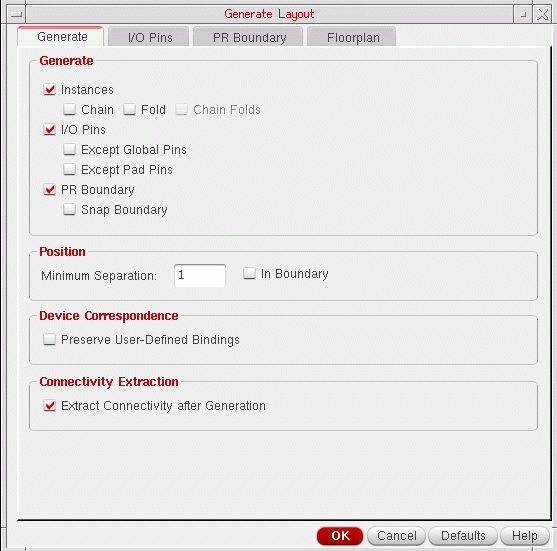

Specifying the Components to be Generated
To specify the components to be generated:
-
Select the Generate tab of the Generate Layout form.
 -
In the Generate group box, select the Instances, I/O Pins, and PR Boundary options, as required.
- To chain transistors, select the Chain check box.
-
To divide transistors in the design into two or more individual folds, select the Fold check box.
If thedisableFoldingenvironment variable is set and the folding threshold for the component type is set to0, folding is disabled. -
To chain the individual folds of a transistor, select the Chain Folds check box.
- For the Chain Folds option to be available, only the Fold check box must be selected. If you select the Chain check box also, Chain Folds is deactivated.
-
Any devices to be chained or folded must belong to a component type that has Component class set to PMOS or NMOS and values set for the Active layer, Width parameter, and Folding threshold parameters. To change any of these parameters, update the appropriate value in the Component Types Mode in the CPH Window. Alternatively, update the LAM File Component Type Section.
If the devices to be chained or folded have their component class set to NFIN or PFIN, these devices must have their Number of fins parameter or the Width parameter specified to enable folding. - To stop Layout XL from generating layout pins for global nets in the schematic, select Except Global Pins.
- To stop Layout XL from generating layout pins for schematic pins that are connected to I/O pads, select Except Pad Pins.
-
To generate a snap boundary, select Snap Boundary.
You can generate a snap boundary only if the PR Boundary option is switched on.
- To stop Layout XL from generating layout pins for global nets in the schematic, select Except Global Pins.
- To stop Layout XL from generating layout pins for schematic pins that are connected to I/O pads, select Except Pad Pins.
-
To generate a snap boundary, select Snap Boundary.
You can generate a snap boundary only if the PR Boundary option is switched on.
-
To preserve any user-defined binding of devices between the schematic and the layout, select Preserve User-Defined Bindings.
This option preserves only user-defined one-to-one, many-to-many, many-to-one, and one-to-many device correspondence defined in the Define Device Correspondence form. It does not report missing devices or shapes within a bound group. - To run connectivity extraction after the layout has been generated, select Extract Connectivity After Generation.
-
To create a label specifying the library, cell, and view of your design just inside the center top edge of the boundary, set the
createBoundaryLabelenvironment variable.
Related Topics
Return to top